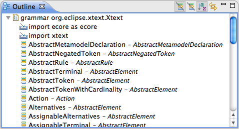

Here are descriptions of some of the more interesting or significant
changes made to Xtext for the Indigo release of Eclipse, grouped by the
different milestones:
|
Repository Moved to Git
|
We migrated the code repository from CVS to Git. Now it is so much easier to synchronize,
revise patches, implement new features in local branches etc. Almost all our issues with
the repositories are gone. Byebye CVS, we won't miss you!
|
| Code Cleanup |
To keep our code base consistent and easy to understand, we have cleaned up major parts,
removing deprecated classes, harmonizing implementations, and eliminating unneeded API.
Now the code is ready for new features!
|
Document Partitions and
Auto Editing |
Xtext now supports document partitions, which is enables several UI enhancements.
Auto editing and bracket matching have been reimplemented on that basis to better conform to
the user's expectations.
|
| Redesign of the Content Outline |
We rewrote the outline code to make customization easier. Major calculation parts have been
moved into a separate job thus no longer blocking the UI. Some performance leaks, e.g. in
sorting, have been patched on the way.

|
| QuickFixes for the Xtext Grammar Language |
The editor for Xtext grammars offers a bunch of new QuickFixes for model names, enum
literals, actions and missing rules.
|
| Clustered Builder |
We reduced the memory consumption of the Xtext builder by processing changed model resources in clusters. See
bug 325759 for details.
|